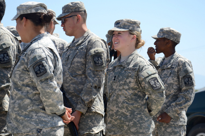
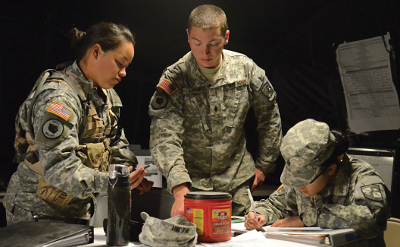
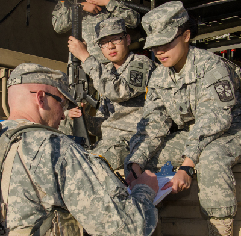

Training Ground

Position: Assistant professor of military science
Age: 30
March 25, 2008. Sadr City, Iraq.
Bullet casings. Mortars. Improvised explosive devices. A 12-hour gunfight and multiple casualties.
Capt. David Chichetti lost three of his fellow soldiers in battle over the next two months – a loss that is etched into the black bracelet he now wears on his right arm.
“This (bracelet) reminds me every day why I’m here,” he said, while looking down at the bracelet with the soldiers’ names inscribed on it. “I’m here to lead soldiers and I’m here to make sure they’re safe.”
Chichetti grew up in Tallahassee, Fla. and does not come from a military family.
But after becoming interested in the history of American wars and researching careers in the armed forces, Chichetti decided to go straight into military school after graduating from high school.
He enrolled at the Citadel, a military college in South Carolina, in 2001 and later trained to become an infantry officer. He was deployed to Iraq twice, between 2007 and 2008 and later between 2010 and 2011.
He said he feels it is important to pass down the lessons he has learned over the years to the next generation – one of the reasons he enjoys his work as an assistant professor of military science and Army ROTC training officer at UCLA.
“The American people trust me to take their sons, daughters, brothers, sisters, husbands, wives – you name it – into combat,” he said. “I’m supposed to get the mission done with the least amount of harm as I can – that is a lot of responsibility.”
Position: UCLA Army ROTC cadet
Age: 32
Four years ago, Oliver Kay was a lieutenant in the British Army. He trained alongside Prince Harry for a year, toured different countries around the world and led a group of about 30 British soldiers in the Iraq War.
Now, he teaches cadets in the UCLA Army ROTC’s Bruin Battalion how to be soldiers.
Though he serves as the battalion’s sergeant major, Kay is not technically ranked any higher than the cadets. He is one of them.
“I just love the challenge and the excitement the army has,” he said. “For me, this isn’t a job – this is an adventure.”
Kay moved to the U.S. after returning from Iraq in 2009 because he felt it offered more educational and career opportunities.
But the adjustment has not been easy.
“(After moving to L.A.), I thought to myself, ‘This is nuts – one day, six months ago I was in Iraq as a platoon commander, leading troops,’” said Kay, currently a fourth-year Middle Eastern and North African Studies student. “And now I am a cadet, with guys in their fourth year, with no military experience, trying to tell me what to do.”
Beyond ROTC, Kay is passionate about learning Arabic and learning about different cultures. He hopes to work for the U.S. government in the Middle East after graduating from UCLA.
And every now and then, he tries to take a break from his busy schedule to go running – a passion he has developed over the years. He also runs in the L.A. Marathon to raise money to support veterans.
While he misses England a lot, he said he is not planning on moving back anytime soon.
“The States have been good to me,” he said. “(The U.S. is) definitely something fresh to me because I have lived out of a rucksack all of my life.”
Position: UCLA Army ROTC cadet
Age: 20
Kirsty Cordes’ day often starts just as her residents’ night is about to end.
The third-year political science student juggles her responsibilities as a resident assistant in Rieber Vista and as an Army ROTC cadet.
“It can be tough – it definitely requires time management because at least with the RA job, it’s a lot of late nights,” she said. “And then I have to still wake up early Monday through Thursday.”
At the start of the ROTC program’s field exercise training earlier this month, Cordes was running on little sleep. She had gone through an entire day plowing through the thick brush and mountainous terrain at Camp Pendleton in pursuit of pretend enemies.
She was hot. She was sweaty. And she was exhausted.
“But it’s OK,” said Cordes, whose face was covered in green camouflage paint. “I know I only have two days of real work. ... I’ll be ready for tomorrow.”
Cordes comes from a military family, which she said inspired her to join ROTC. Her grandfather was a lieutenant colonel in the U.S. Air Force, her uncle is currently a colonel in the Air Force, and her mother went through the ROTC program at UCLA when she was in college.
Cordes said the relationships she has formed – both as a resident assistant and as a cadet – have made her college experience worthwhile.
“The people I’m closest to are the people who are also my year (in ROTC),” she said. “You can really utilize them as a support system because you are all doing the same thing and you all want each other to do well.”
Position: Assistant professor of military science
Age: 29
One of Capt. Erin Fritzler’s favorite parts about being an officer is the opportunity to help people both on and off the battlefield.
Between 2007 and 2008, she was deployed in Telafer in Northern Iraq and was responsible for managing police stations in the region – with tasks ranging from training police officers, to ensuring they had the supplies they needed to do their job well.
“The most memorable stories I have ever had was when I took care of a soldier,” she said. “That’s the whole point of being an officer in the army, I think, because you’re taking care of soldiers and you’re making sure they’re trained.”
Fritzler graduated from the U.S. Military Academy at West Point in 2006 and trained in the police corps, a law enforcement branch within the U.S. Army.
She currently works as an assistant military science professor and ROTC recruiter at UCLA.
Beyond her military responsibilities, however, Fritzler has managed to pursue other passions as well.
Every week, she and her husband go to local dance studios to swing dance.
Dance is also the secret behind their marriage – they first met during a dance workshop in Kansas City in 2009.
While swing dancing and her work at UCLA are very different, Fritzler said it isn’t too hard balancing her personal and professional life.
“I don’t really act differently when I’m off duty than when I’m on duty,” she said. “I’ve always tried to maintain some transparency (about my interests).”
Position: Professor of military science
Age: 46
Lt. Col. Shawn Phelps has spent the last few years guiding cadets in the UCLA Reserve Officers’ Training Corps through the ropes of the military, drawing from his 26-year experience in the U.S. Army.
In a couple of months, Phelps will pack up the objects that furnish his office – about 90 military coins, dozens of plaques he has earned over the years and his coveted baseball mementos.
He will start a new chapter of his life as a retired army officer, instructing Junior ROTC students at a high school located near Orlando, Fla.
“I wake up before my alarm every day and I’m excited to do what I do,” he said to a group of ROTC cadets during his last field training exercise as an active duty officer earlier this month. “(Teaching people) is something I will continue to do at JROTC – it’s something I love.”
Phelps grew up in a small farming community in central Washington. He was an avid athlete, playing basketball, football and baseball for his high school.
“The most difficult thing for me when I first joined (the military) was that I had never been anywhere before,” he said. “I’d never been outside of my hometown other than to visit my grandparents nearly a hundred miles away.”
Phelps has travelled to more countries than states within the U.S. in the past two decades. He was deployed to Iraq in 2003 and lived on a military base in Germany with his wife and two children for several years.
Phelps joined the army on a whim in 1987, after driving his college roommate to an office to enlist in the army and deciding to enlist as well.
He has continued to apply his love for athletics, drawing inspiration from Coach John Wooden’s leadership style, to the art of war.
“We don’t get trophies in the army, but we want to be high-performing teams,” he said, “We want to be standing in the end – that’s our trophy.”
Victoria Sanelli, the military science department’s manager, has watched Phelps grow into his role as a military science instructor since the day he first stepped onto the UCLA campus in 2010.
She said she remembers Phelps sometimes doing sit-ups on a table in the cadets’ lounge and walking around the ROTC hallway in his shorts and sweaty T-shirts.
“Not every (professor of military science) comes in and does that,” she said.
Phelps’ students have also taken notice of his love for teaching and his efforts to foster a community within the ROTC program.
“He is the embodiment of a scholar, an athlete and a gentleman … that’s something I admire and something I want to aspire towards,” said Michael Brinkley, a fourth-year history student.
And while Phelps is moving more than 2,000 miles away in June, UCLA will continue to hold a special place in his heart, he said.
“Even though I’ve got a Washington State flag hanging on the door, this is my school now,” he said. “I’m absolutely going to miss it. It’s like I’m graduating from here now.”
But, he’s also ready to start over.
“These guys down the hallway that I work with obviously mean a great deal to me,” he said. “But that’s kind of common in the army – we build our relationships and then we move on to our next assignment.”
The enemy was attacking oil fields, hiding in the brush and strapping on improvised explosive devices.
About 175 cadets in camouflage U.S Army Combat Uniforms were responsible for stopping the enemy in its tracks, through drills like ambushes and reconnaissance operations. 
Amid the action was third-year nursing student Kali Whitehurst, a lieutenant in this simulated battlefield.
She was running on little sleep. But somehow the adrenaline rush she got from her mission – to ensure the cadets were accounted for throughout the training – kept her going, she said.
She had spent the last few weeks helping to organize the training, and was now responsible for keeping track of the number of men and women in the battlefield, including any injuries that occurred on site.
The Army Reserve Officers’ Training Corps program hosts several training exercises throughout the year, with two main trainings in the fall and spring.
Students from across Southern California – including UCLA, the University of Southern California and California State University, Northridge – attended the spring training at Camp Pendleton earlier this month.
The training was designed to test the students’ leadership skills and challenge them to think on their feet. The Daily Bruin sent four journalists to embed themselves into the training session with the cadets.
Whitehurst is one of the top-performing cadets in the Army ROTC program at UCLA, which means she has consistently scored higher at training exercises and has a higher physical training score than most of her peers, both male and female.
She is one of many women trying to find their way in a predominantly male field.
The U.S. Armed Forces is currently re-evaluating its standards for combat positions, after the Department of Defense announced earlier this year that the positions are now open to women.
For the changes to go in effect, however, branches within the armed forces will need to put in place gender-neutral standards by 2016.
If branches in the military choose to make adjustments in their standards for people serving on the front lines, the changes would trickle down to ROTC programs across the country, said Mike Johnson, a U.S. Army spokesman.
However, women have long served in combat-related roles – particularly those serving in Iraq and Afghanistan.
“Women have really been on the front lines. ...The way the war in Afghanistan and the war in Iraq is being fought, the battlefield is all around us,” said Lee Reynolds, an assistant military science professor at the University of Southern California.
Lt. Col. Shawn Phelps said that in terms of the structure of the military, a majority of high ranking officers come from the combat arms, which are currently comprised of males only.
“Our leadership does not represent our society,” said Phelps, a professor of military science at UCLA.
He said the formal expansion of women’s roles in the armed forces is symbolic of the changes of gender roles from generation to generation.
“We’ve got the people in the pipeline now,” he said. “We’ve just got to give them the opportunity now to serve in the same jobs so that they can get promoted. … Who knows, it could be somebody sitting in these desks here (at UCLA).”
College ROTC programs are a stepping stone for men and women who hope to get their foot in the door because they help them develop a basic set of skills that can be applied to various fields in the army, Phelps said.
While many women stated similar motivations for joining the army as men at the field exercise training in Camp Pendleton, they continue to constitute a minority in the Bruin Battalion and in the army as a whole.
There is roughly a two-to-five ratio of females to males within the Bruin Battalion, the official name of the UCLA ROTC program’s Army division.
Whitehurst was one of three women on the eight-person staff that led the spring field exercise training. 
Myan Pham, a fourth-year history student who serves as an executive officer in the Bruin Battalion, was one of the other women who helped lead the training.
She said her male counterparts are often surprised if she performs well in training exercises – a sign of the difference in expectations for the two genders.
“Being a woman changes everything,” said Pham, who wants to be a doctor for the army.
Once, a team captain wrote on her evaluation card that he had initially thought she would be shy because she was “small.”
This, she said, was an indication of the added hurdles women have to surpass in the military.
“He’d already formed an impression of me before I even performed,” Pham said.
When Capt. Erin Fritzler was going through military training nearly a decade ago, she disliked it when people tried to teach her how to “take care” of herself out in the field – something she tries to shy away from when she is teaching her students at UCLA.
“Honestly, I don’t look at (the female cadets) as women – I look at them as cadets,” said Fritzler, as assistant military science professor at UCLA.
Sometimes though, Fritzler does try to encourage her cadets to improve their physical training score to help them maintain their competitiveness.
“You need to have a lot of credibility with your male counterparts,” she said. “They don’t want to help you if you don’t want to help yourself.”
Edward Trinidad, a fourth-year English student who was a Battalion commander this past year, said he has noticed that males at UCLA are fairly respectful of their female counterparts, which might be because they are familiar with their leadership styles and capabilities.
However, this is not the case during trainings where cadets from other schools are present, he added.
Cadets from across the country attend the Leadership Development and Assessment Course in Ft. Lewis, Wash. The course assesses trainees’ leadership skills and potential as future officers in the army, in areas such as first aid, weapons familiarization and teamwork.
When he attended the program last year, Trinidad was leading a Reconnaissance mission and chose a female cadet to help with the exercise because he felt she was the top cadet in the group, he said.
The evaluator gave Trinidad extra points for creating a positive environment and for not being gender-selective because males tend to pick males in those types of exercises, Trinidad said.
“I found that that (evaluation) really strange,” he said. “I don’t base anything off gender – just on the quality of the cadet.”
Men and women inherently have different body compositions, which means there are different standards for the two genders in the military, Phelps said.
Whitehurst said she sometimes feels like she is at a disadvantage because she is smaller in physique than many of her male counterparts.
Last summer, Whitehurst attended the Leadership Development and Assessment Course.
“The bigger guys and the guys with the deeper voices who could shout louder than me definitely had it over me,” Whitehurst said. “As a female, your voice only goes but so deep and as a five-foot-nothing tall girl, I can only get but so tall.” 
Still, Whitehurst and Pham have found ways to command respect from some of their male peers who might not take them seriously at first.
They prepared contingency plans in case something went wrong.
Pham, Whitehurst and the other cadets on the leadership team ran the Tactical Operations Center – another word for the simulated battlefield’s headquarters – like a well-oiled machine.
They debriefed with their team every night – keeping tabs on injuries, supply levels and even the weather.
At the beginning of the training, a cadre member had warned the cadet leaders that no matter how closely they planned out the weekend, they would be dealt with curveballs.
And they were.
A cadet ended up in the wrong squad. Cadets who were assigned a leadership role in their squad got injured – a gap the team had to scramble to fill.
But even when she was stressed, Whitehurst tried her best to stay calm throughout the weekend. That is a skill she has learned in the last three years, while navigating through the Army ROTC program.
“I’ve found that if you talk to (cadets) as a person, then they are more likely to do what you need them to do than talking down to them,” Whitehurst said.
Fritzler said that while she is happy the Department of Defense is taking steps to open up ground combat positions to women, she would like the re-evaluation to happen at a quicker pace.
“Policy is only as good as when it’s being implemented,” she said. “So if it’s a good policy and they aren’t really enacting it until who knows when, it’s like they aren’t enacting it at all.”
Whitehurst said that after going through the ROTC program and having the success she has had in it, she would not be opposed to a position in combat in the event nursing does not work out for her.
“It would definitely be something I would consider,” she said. “I wouldn’t shut it out entirely, which is a surprise to me.”
And when it was time to head back to UCLA Sunday afternoon, Whitehurst was already thinking about the week that awaited her – the homework she had to catch up on, the 12-hour nursing rotations, and more early morning ROTC training exercises.
“I’m not going to say it’s easy – it’s hard,” she said, smiling. “But you make it work for the things you love.”
I grew up in India learning about the four wars we fought with Pakistan, which was divided from us by a man-made border upon our independence from the British.
I grew up in a country where ushers check for explosives underneath seats in movie theaters between shows, and every major shopping mall or public space has metal detectors and security checkpoints.
I grew up hating war, the idea of fighting, bloodshed, pain. But never did I falter in my immense respect for those men and women in uniform who defend democracy. While it’s easy to hate war and the suffering it brings, it’s less automatic to be reminded of the evident strife and sacrifice of those who fight it.
These thoughts were running through my head before I boarded the bus that took me to Camp Pendleton for a weekend of ROTC field training exercises – and were only reinforced by the time the trip came to an end.
The bus ride there was like the calm before a storm – the cadets, students from UCLA and California State University, Northridge, sat in stoic silence, perhaps contemplating the weekend ahead. Before a few cadets boarded the bus, they asked me why I was willing to subject myself to what they were about to go through, jokingly, of course. As a photographer on assignment to shoot their exercises, I was thinking about the same, but with excitement rather than dread.
As a media embed, I followed the cadets for the entirety of their training. Eating Meals Ready to Eat, sleeping out in 40-degree weather, waking up to frost on their faces, carrying heavy loads of about 30 pounds on their backs while performing physically arduous tasks, was an average day for the cadets.
I tried to put on a brave face and hide my exhaustion because never did I once see these cadets flinch or disobey a direct order. They slugged through those extremely hot days on rugged hills spotted with thorny cacti and bushes in all their military regalia without ever uttering a sigh of defeat.
In spite of the strain the cadets were going through, they had a few moments of repose between each training lane, a lane being a specific course or mission that the cadets had to complete. I remember a cadet yelling to the rest of his squad before drinking his own water, “Hey, whoever is out, please have mine.”
During an early morning lane, a cadet looked at me during her break. I was shivering, and she walked up to me. Without a moment’s hesitation or a chance for me to deny her offer, she handed me her gloves and scarf.
On another occasion, a cadet fell to the ground bearing the heavy weight off his rucksack, and immediately, two of his compatriots helped him up, dusted him off and gave him a drink of water.
These were the moments that stuck out to me the most. Moments of camaraderie, unspoken understanding that they were all in this together. It didn’t matter what school they were from or even what name or rank they held. All that mattered was that they were fighting together, side by side.
I remember talking to one of the cadre, befuddled by the passion and selfless nature of the cadets, and asked him one simple question: “Why?” The answer he gave me was by far my most profound experience at Camp Pendleton.
He said that most soldiers who go into combat are not fond of war. Some don’t fully understand the policies coming out of Washington.
They fight in part because they love their country, but there is a greater factor behind their willingness to make sacrifices. They have a friend fighting right beside them, and they would do anything and everything possible to protect him or her. “That’s why we do what we do,” he said. “For the guy standing next to us, that’s why we fight.”
I’ve covered a lot of stories for the Daily Bruin, but never have I been so full of emotion as I was at Camp Pendleton.
Throughout the weekend, I took photo after photo, trying to find the one that perfectly summed up the intensity of the training, their willingness to keep going. Though I consider myself to be a good photographer and a decent storyteller, the feelings of respect and honor that were invoked in me by these young men and women can never be captured by a camera lens. Maybe this photo essay can shed some light on the endurance of these brave cadets.